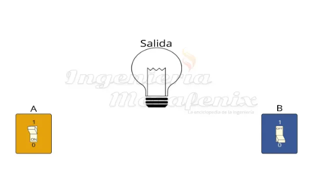

Objetivo
1. Investigar acerca de los sistemas algebraicos aplicados en un entorno booleano, profundizando en el método de minimización de QuineMcCluskey.
2. Realizar una explicación clara para un interesado en diseñar algún circuito lógico, proporcionando los conceptos necesarios y algunos métodos de minimización para el algebra booleana a usar, incluyendo ejemplos.
3.Proporcionar un software capaz de interpretar el método Quine-McCluskey, como método de minimización principal del proyecto, con tal de que le sea de apoyo al usuario.
